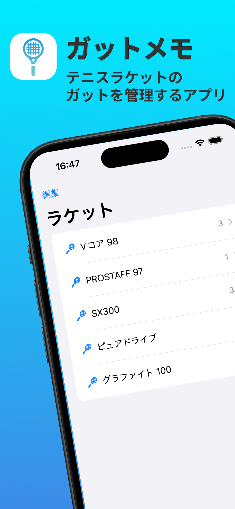
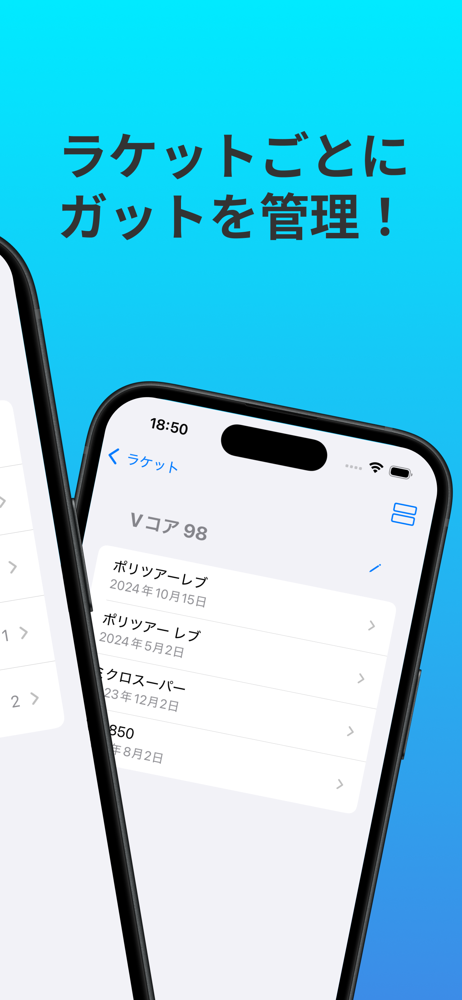
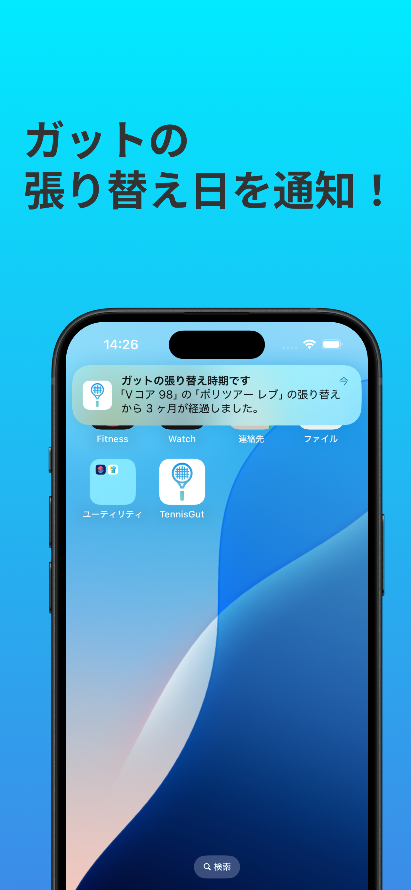

ガットメモ
・アプリ概要



ガット管理でパフォーマンスアップ！交換時期を見逃さない便利アプリ
このアプリの概要
あなたのテニスラケットのガットを適切に管理し、パフォーマンスを最大化しましょう！
ガットメモは、ガット交換の記録などを簡単に管理できる便利なツールです。交換の目安を通知する機能で、ガットの摩耗を見逃さず、最適な状態でプレイを続けることができます。
主な機能
・ガット交換の記録：交換した日付や種類を簡単に記録
・通知機能：交換時期が近づいたら通知でお知らせ
・詳細なメモ：ガットの種類やテンション、プレイ感想などをメモ可能
・履歴管理：過去のガット交換履歴を一覧表示
このアプリであなたのラケットを最適な状態に保ち、ベストパフォーマンスを引き出しましょう！
・プライバシーポリシー
プライバシーボリシー
・Contact
sigren8@yahoo.co.jp